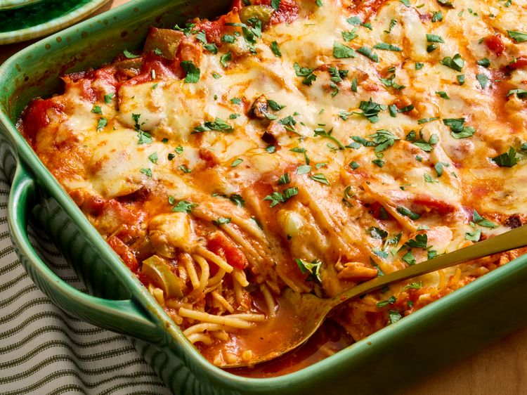

Chicken-Cacciatore-Casserole

Description
This chicken cacciatore casserole transforms the classic Italian favorite into a crowd-pleasing
one pot baked pasta dish. Chicken, spaghetti, and veggies simmer together in a rich tomato sauce and are finished
with melted cheese.
- 12 ounces dried spaghetti, broken in half
- 2 tablespoons olive oil
- 3 cloves garlic, minced
- 1 teaspoon dried Italian seasoning
- 1/2 teaspoon salt
- 1/4 teaspoon ground black pepper
- 3 cups chopped cooked chicken
- 3 cups chicken broth
- 2 cups marinara sauce
- 1 (14.5 ounce) can petite diced tomatoes, undrained
- 1 cup chopped green bell pepper
- 1 cup sliced mushrooms
- 1 1/2 cups shredded Italian-blend cheese
- 2 tablespoons chopped fresh Italian parsley (optional)
Return to Home